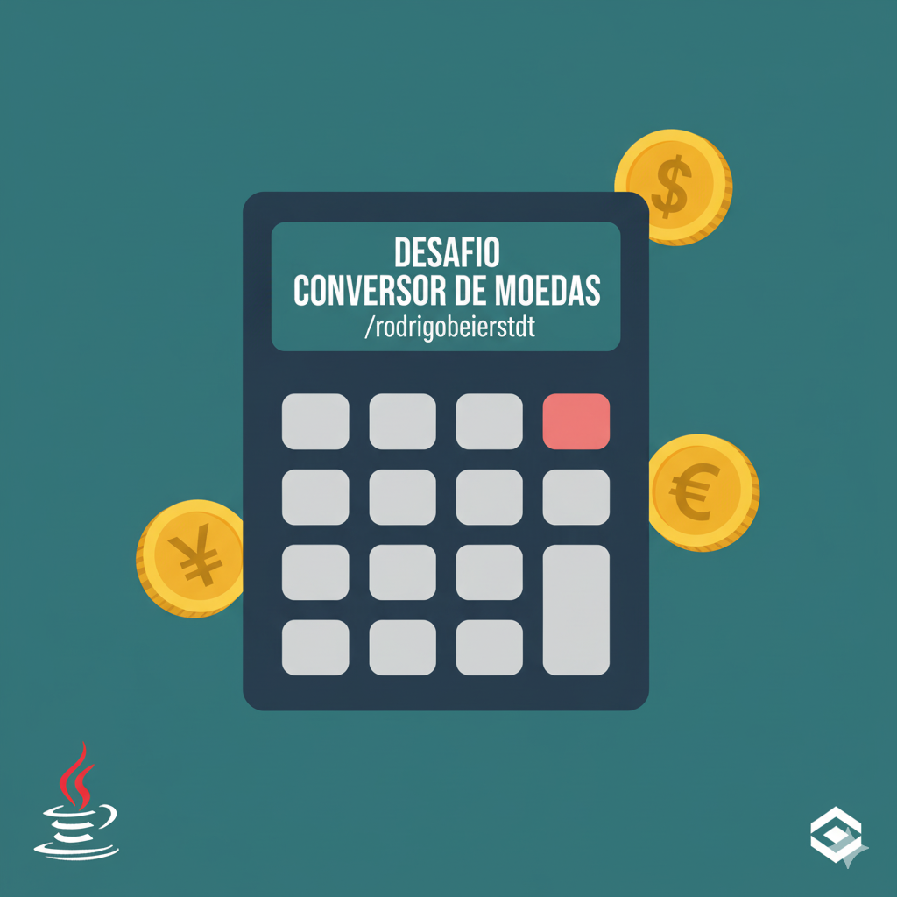
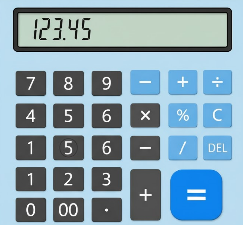

Rodrigo Beierstdt
Estudante de Engenharia de Software e Desenvolvedor Back-end Entusiasta. Focado em criar soluções robustas com Java/POO.
Baixar CVEstudante de Engenharia de Software e Desenvolvedor Back-end Entusiasta. Focado em criar soluções robustas com Java/POO.
Baixar CVEstudante de Engenharia de Software com foco no Desenvolvimento Back-end. Minha base é sólida em Programação Orientada a Objetos (POO) com Java, o que me permite criar estruturas de código limpas e funcionais, como demonstrado em meus projetos. Estou constantemente me aprimorando em linguagens como Python e buscando novas formas de aplicar lógica e design de software em soluções eficientes. Sou motivado pelo desafio e pela melhoria contínua.
CRUD completo em Java focado em POO e persistência de dados.
Tecnologia: Java (POO)
Sistema simples feito em Java para conversão de moedas
Tecnologia: Java
Calculadora feita por Java com o uso de Swing.
Tecnologia: JavaSwingNovos projetos, como APIs em Spring Boot, serão adicionados em breve!
Gestor de Dados - Construtora Parati LTDA.
2024 - Momento Atual
Estudante de Engenharia de Software
Pontificia Universidade Católica do Paraná (PUC-PR) | 2024 - Presente
Foco em Desenvolvimento de Sistemas e Arquitetura de Software.